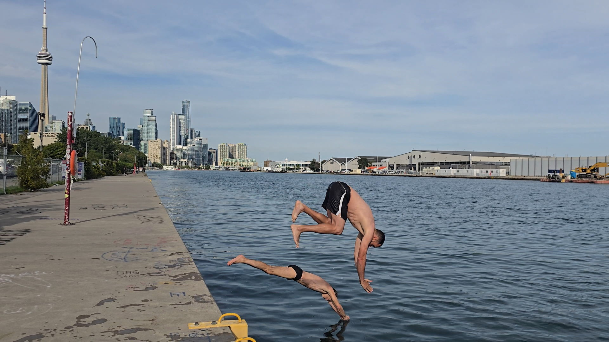
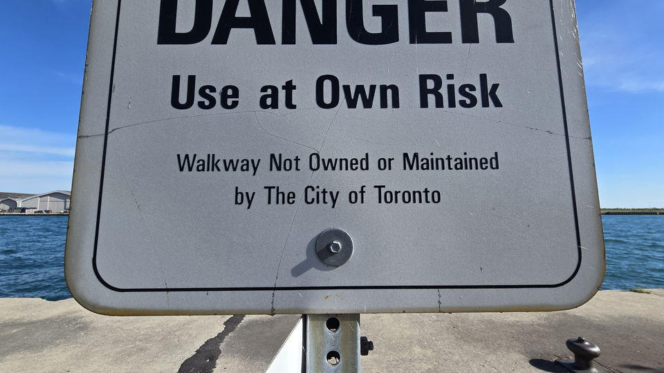
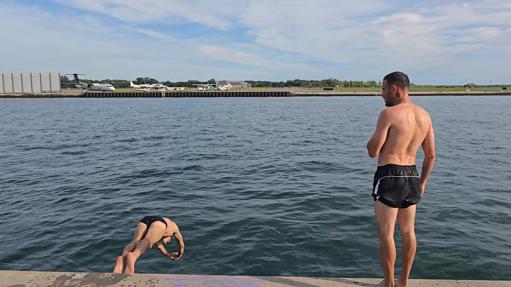

Before you get in
Swim safely.
Nobody owns this pier, maintains it, patrols it, or watches the water. Everything below is what regulars have learned the hard way.
The essentials
Four things, every time.
None of these are new. They're just the ones people skip on a nice day.
Never swim alone
Bring someone who stays dry, stays put, and can see you the whole time. A person on the deck is worth more than any piece of equipment.
Check the conditions
Wind, chop, water temperature, and how you actually feel today. The lake changes hour to hour, and so do you.
Check depth and debris
Look before you go in — every visit, not just the first one. Never enter head-first into water you haven't checked that day.
Know your limit
And stay within it. Cold water takes your strength and your judgement long before it takes your nerve.

Use at own risk
Nobody is responsible for this but you.
The signage on the pier reads: “Danger — Use at Own Risk. Walkway Not Owned or Maintained by The City of Toronto.”
That is not boilerplate. It means no scheduled inspection of the deck, the edge, or the ladders. No lifeguard. No patrol. No one whose job it is to notice that you went in and didn't come out.
It also means the pier only stays usable because people look after it themselves — which is what the Friends of Love Quay are for.
Known hazards
What to look for.
This list isn't exhaustive, and it isn't a substitute for looking at the water in front of you.
- Debris in the water. Wind and waves move things. Wood, rebar, chunks of concrete and rubbish all end up along this shoreline. Check the entry point every time.
- Broken deck and crumbling edges. Parts of the concrete have failed, and in places the surface has opened up over a void. Watch your footing, especially in low light or with wet feet.
- Cold water shock. Going in fast when the water is cold triggers an involuntary gasp and a sharp spike in breathing rate. Get in gradually, and never jump in cold if you're on your own.
- Boat traffic. The pier sits at the mouth of the Inner Harbour. A sign at the head of the walkway warns about the cross-channel ferry, and small craft under sail and power pass close by. Do not swim into the channel.
- No shallow end. The water at the west end is deep right up against the wall. There is nowhere to stand up and rest.
- Getting out is harder than getting in. Know which ladder you are heading for before you get in the water, and check that you can reach it.

Winter swimming
You cannot see the ice.
This is the one that surprises people. Ice has a refractive index very close to that of the water around it — so a floating chunk barely bends the light passing through it, and barely shows.
You will not reliably spot it from the deck, and you will not spot it at all once you're in and low to the surface. In winter, assume ice is in the water whether or not you can see any, and never enter head-first.
Know your limit and stay within it
Cold shortens everything: how long you can swim, how well you can think, how far you can reach. Decide how long you are staying in before you get in, and get out early rather than late.
Getting out
Two ladders, one plan.
The swimming spot at the westernmost end is flanked by two safety ladders — one straight, one angled like a set of stairs.
The angled one is much easier to use with cold hands and tired arms, which is exactly when you'll want it. Pick your ladder before you get in, and don't swim further from it than you can comfortably swim back.
Neither ladder is inspected on any schedule. Look at the one you're planning to use, and put a hand on it, before you commit to the water.

Never swim alone.
Know your limit.
If you take one thing from this page, take those two. Everything else on it is detail attached to them.
Help keep it beautiful